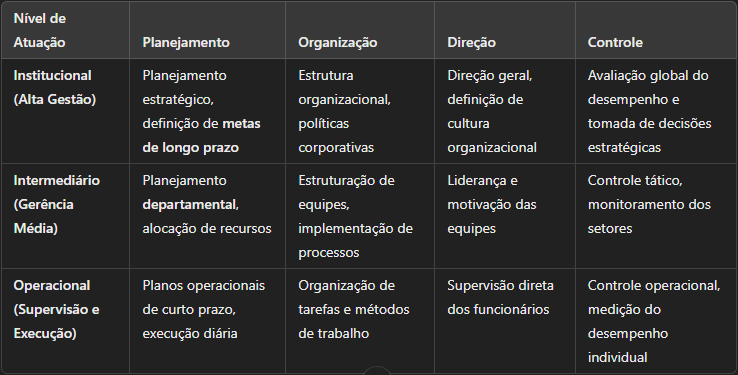

A administração de uma organização exige a aplicação das quatro funções administrativas para coordenar atividades e otimizar recursos. Essas funções são interdependentes e essenciais para transformar os objetivos organizacionais em resultados concretos.
1.1. As quatro funções administrativas:
Planejamento:
Primeira função administrativa, define o que deve ser feito, quando, como e por quem.
Envolve a definição de objetivos organizacionais e estratégias para alcançá-los.
É um processo contínuo de análise, tomada de decisões e solução de problemas.
Exemplo: Determinar metas de crescimento anual, alocação de orçamento e prioridades estratégicas.
Organização:
Responsável por estruturar recursos, equipes e processos para implementar o planejamento.
Inclui a distribuição de tarefas, a criação de departamentos e a definição de autoridade e responsabilidades.
Exemplo: Criar setores específicos para marketing, finanças e operações e alocar recursos para cada um.
Direção:
Garante que o planejamento e a organização sejam traduzidos em ação.
Envolve liderança, motivação dos colaboradores e comunicação eficaz.
Exemplo: Um líder que motiva sua equipe a cumprir prazos e incentiva a inovação.
Controle:
Acompanha e avalia o desempenho organizacional, garantindo que as ações estejam alinhadas com os objetivos.
Permite a correção de desvios e a tomada de decisões baseadas em dados.
Exemplo: Monitoramento de indicadores de desempenho (KPIs) para avaliar a eficiência das operações.
1.2. Os três níveis organizacionais e suas funções administrativas
Cada nível organizacional exige um enfoque diferente das funções administrativas. Conforme o quadro abaixo, os gestores desempenham atividades distintas de acordo com sua posição na hierarquia:

2. Cultura Organizacional
A cultura organizacional representa o conjunto de valores, crenças e normas que moldam o comportamento dos funcionários dentro da empresa.
2.1. Principais elementos da cultura organizacional:
Artefatos visíveis: Elementos externos como uniformes, layout do escritório e símbolos corporativos.
Valores organizacionais: Princípios que guiam a tomada de decisões e a conduta dentro da empresa.
Pressupostos básicos: Ideias enraizadas que influenciam a mentalidade dos funcionários.
2.2. Importância da cultura organizacional:
Impacta a motivação dos colaboradores, o desempenho e a inovação.
Define o clima organizacional e afeta diretamente a comunicação interna.
Influencia como a empresa se adapta a mudanças e crises.
3. Níveis Hierárquicos e Estrutura Organizacional
Os níveis hierárquicos organizam a empresa em diferentes camadas de autoridade e responsabilidade. Essa estrutura permite uma comunicação eficiente e um fluxo de decisões bem definido.
3.1 Principais critérios de estruturação organizacional:
Por Função: Departamentos especializados em áreas como marketing, finanças e produção.
Por Produto: Empresas divididas conforme diferentes produtos ou serviços oferecidos.
Por Cliente: Estrutura voltada para atender segmentos específicos de clientes.
Por Região Geográfica: Organização baseada na localização das operações.
3.2. Representação da Estrutura Organizacional – Organograma Funcional
Abaixo temos um exemplo de organograma funcional, que mostra a relação entre diferentes setores dentro de uma empresa:
Presidência
│
├── Conselho Estratégico
│
├── Comercial
│ ├── Marketing
│ ├── Vendas
│ ├── Atendimento ao Cliente
│
├── Operações
│ ├── Produção
│ ├── Logística
│ ├── Tecnologia da Informação
│
├── Administrativo
├── Jurídico
├── Finanças
│ ├── Contabilidade
│ ├── Contas a pagar/receber
│
├── Gestão de Pessoas
├── Recursos Humanos
├── Departamento Pessoal
Esse modelo demonstra como as empresas organizam seus setores para garantir uma operação eficiente e bem coordenada.
4. Compreendendo os Tipos de Estruturas Organizacionais
As estruturas organizacionais determinam como as funções, responsabilidades e hierarquias são distribuídas dentro de uma empresa. A escolha do modelo ideal depende de fatores como tamanho da organização, tipo de mercado e complexidade dos projetos. A seguir, são apresentadas quatro das principais estruturas organizacionais, destacando suas vantagens e desvantagens.
4.1. Organização Funcional Clássica
A organização funcional clássica é uma das mais tradicionais e amplamente utilizadas. Nesse modelo, a empresa é dividida em departamentos especializados, como marketing, finanças, produção e recursos humanos, cada um liderado por um gestor funcional.
Vantagens:
Especialização e eficiência: Profissionais trabalham em áreas específicas, desenvolvendo maior expertise.
Clareza na hierarquia: A estrutura bem definida facilita a comunicação interna e a delegação de responsabilidades.
Maior controle e supervisão: Cada departamento tem um líder especializado, garantindo foco nos processos internos.
Desvantagens:
Falta de integração entre áreas: A comunicação entre departamentos pode ser lenta e burocrática.
Resistência à inovação: Departamentos podem operar de forma isolada, dificultando mudanças organizacionais.
Menos flexibilidade: Profissionais têm pouca exposição a outras funções, o que pode limitar o aprendizado e a adaptabilidade.
4.2. Organização Funcional Projetizada
Na organização projetizada, o foco principal está na execução de projetos temporários, em que equipes são montadas para trabalhar em objetivos específicos, sendo dissolvidas após a conclusão do projeto.
Vantagens:
Alta flexibilidade: A estrutura se adapta rapidamente às demandas dos projetos.
Foco nos resultados: Toda a equipe trabalha para alcançar os objetivos do projeto, sem distrações com tarefas operacionais rotineiras.
Tomada de decisão rápida: Os gestores de projeto têm autonomia para implementar mudanças conforme necessário.
Desvantagens:
Possível falta de estabilidade: Os colaboradores podem ter incertezas sobre sua posição após o término do projeto.
Uso ineficiente de recursos: Sem um planejamento adequado, pode haver desperdício de mão de obra e capital.
Conflitos entre projetos: Se a empresa gerencia vários projetos ao mesmo tempo, pode haver disputa por recursos.
4.3. Organização Matricial Fraca
A estrutura matricial fraca é uma combinação da estrutura funcional com a projetizada, porém mantendo a predominância do modelo funcional. Os gerentes de projeto possuem pouca autoridade e dependem dos gestores funcionais para alocação de recursos.
Vantagens:
Melhor comunicação entre departamentos: Favorece a colaboração entre áreas sem comprometer a estrutura funcional.
Otimização de recursos: Profissionais podem trabalhar em múltiplos projetos sem comprometer suas funções principais.
Maior flexibilidade em relação à funcional clássica: Equipes podem se adaptar melhor a demandas pontuais.
Desvantagens:
Baixa autoridade do gerente de projeto: Ele precisa negociar constantemente com os gestores funcionais, o que pode atrasar decisões.
Possíveis conflitos de prioridade: Funcionários podem ter dificuldades em balancear tarefas do projeto e obrigações departamentais.
Falta de comprometimento com projetos: Como os funcionários não estão totalmente dedicados aos projetos, pode haver menor engajamento.
4.4. Organização Matricial Forte
A estrutura matricial forte é semelhante à anterior, mas com maior autoridade concedida ao gerente de projetos, que tem mais controle sobre os recursos e decisões do projeto.
Vantagens:
Maior equilíbrio entre funcional e projetizado: Mantém a estabilidade da organização funcional, mas garante flexibilidade para projetos.
Maior comprometimento com os projetos: Equipes são mais dedicadas e trabalham com foco nas entregas.
Tomada de decisões mais ágil: O gerente de projetos tem mais autonomia, acelerando a execução das atividades.
Desvantagens:
Conflitos de autoridade: Pode haver disputas entre gestores funcionais e gerentes de projeto pelo controle de recursos.
Maior complexidade gerencial: Exige uma estrutura bem definida para evitar sobrecarga de demandas e desorganização.
Carga de trabalho intensa: Profissionais podem ser designados para múltiplos projetos ao mesmo tempo, gerando sobrecarga.
A escolha do modelo de estrutura organizacional adequado depende das necessidades estratégicas e operacionais da empresa. Organizações funcionais são mais estáveis e eficientes, mas menos flexíveis. Estruturas projetizadas permitem maior inovação e rapidez, mas podem ser instáveis. Já as estruturas matriciais buscam um equilíbrio entre estabilidade e flexibilidade, mas exigem um bom gerenciamento de recursos e autoridade para evitar conflitos internos.
5. Considerações Finais
Uma boa estrutura organizacional garante clareza nas responsabilidades e eficiência na execução das estratégias.
A cultura organizacional impacta diretamente o desempenho, a inovação e a satisfação dos funcionários.
A administração eficaz depende da aplicação equilibrada das funções de planejamento, organização, direção e controle.
O uso de organogramas e critérios de departamentalização facilita a comunicação e a tomada de decisões dentro da empresa.